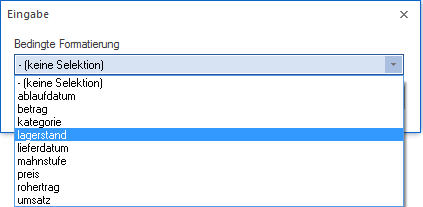
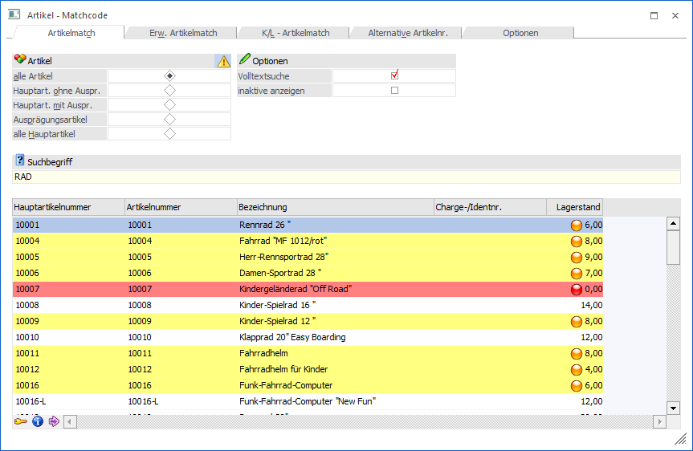
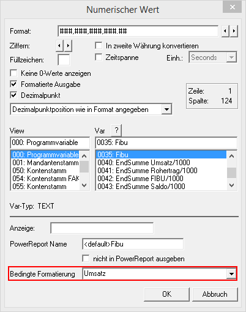
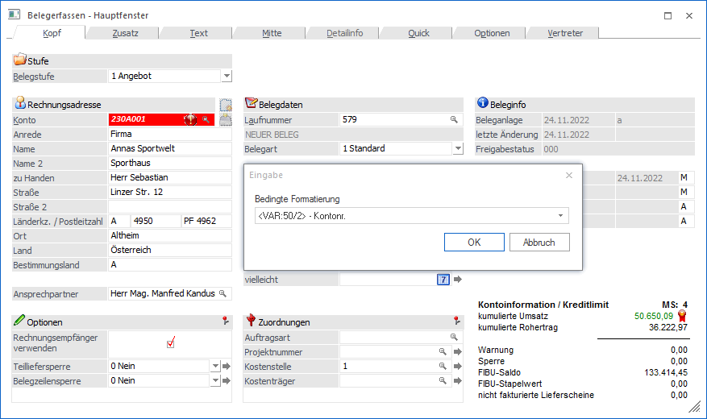
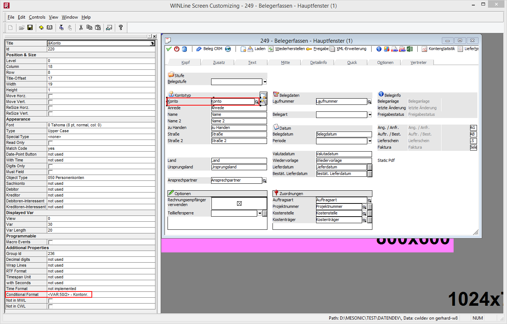

Bei der Direktprüfung gibt es keine Automatik, d.h. die Bedingung muss auf eine der folgenden Arten aktiviert werden:
ü In einer Tabelle
In jeder
WinLine Tabelle kann über die rechte Maustaste die Option "bedingte
Formatierung" angewählt werden. Dadurch öffnet sich dann ein Fenster, wo aus der
Auswahllist eine der definierten Bedingungen ausgewählt werden kann.

Beispiel - Bedingte Formatierung in einer Tabelle

Hier wird der Artikelmatchcode abhängig vom Lagerstand entsprechend eingefärbt.
Hinweis 1
Die Zuweisung einer bedingten Formatierung in einer Tabelle kann nur von einem Administrator durchgeführt werden, die Einstellung gilt dann für alle Benutzer (sofern die Spalte, an der die bedingte Formatierung hängt, beim jeweiligen Benutzer angezeigt wird). Diese Funktion steht nur in der WinLine zur Verfügung.
Hinweis 2
Wenn in der Belegerfassungstabelle (Allgemeine Belegerfassung) eine bedingte Formatierung hinterlegt wird, dann dies aus Auswirkung auf die Erfassungstabelle im indiv. Belegerfassungsformular.
ü Bildschirm-/Druckformulare
In
jedem Formular, das im "großen" Formular-Editor geöffnet werden kann, kann bei
jeder Textvariable, numerischen Variable, Formel oder Datumsvariable eine
bedingte Formatierung hinterlegt werden. Dazu gibt es in den genannten Elementen
jeweils die Auswahllistbox "Bedingte Formatierung" aus der dann die gewünschte
Bedingung ausgewählt werden kann.
Beispiel - Bedingte Formatierung in einer numerischen Variable

ü Eingabefelder
Bei Eingabemasken
gibt es zwei mögliche Varianten - es kann entweder im Fenster direkt über die
rechte Maustaste "Bedingte Formatierung" eine Zuweisung erfolgen, oder es kann
im WinLine CTK pro Eingabefeld ein "Conditional Format" hinterlegt werden.
Beispiel - Prüfung der Mahnstufe bei der Kontonummer direkt im Programm

Hinweis
Wenn die Einstellung direkt im Programm über die rechte Maustaste erfolgt, dann gilt diese für alle Benutzer / Benutzergruppen. Diese Funktion steht nur in der WinLine zur Verfügung.
Beispiel - Prüfung der Mahnstufe bei der Kontonummer in WinLine CTK
